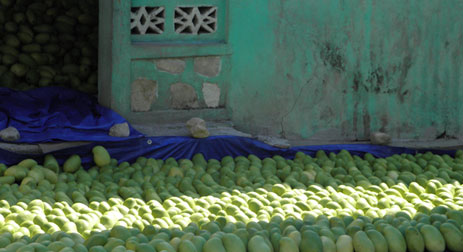

Haitian mango farmers: making improvements last
Close to 200,000 farmers produce mangoes in Haiti and FAO estimates that it is among the world’s 20 largest mango producers, with 200,000 – 400,000 metric tons a year. But Haiti’s mango exports have not increased in the last two decades due to poor access to finance, lack of organization of farmers and low productivity. How can the sector’s potential for growth be improved sustainably? The Haiti Hope project, a five-year, $7.6 million partnership launched in May 2010 between the Coca-Cola Company, MIF, USAID and TechnoServe – a business-oriented nonprofit – was designed to grow opportunities of 25,000 smallholder farmers. To make sure the improvements in the farmers live last beyond the project, farmers were organized in producer business groups and offered dedicated financing products and technical assistance to facilitate their integration in the value chain.
Here’s what we learned from the two main elements of this sustainable project design:
1) Establishing Producer Business Groups 2) Dedicated financing products
Producer Business Groups Each of these producer business groups (PBGs), is made up of approximately 60 farmers each, selected through a scorecard system (criteria include current production, number of mango trees, yield per tree, participation in cooperatives, etc). PBGs are based on traditional cooperatives, but with enhanced business models. As such, members receive training and support in basic business skills and advice in crop diversification, reforestation and increasing productivity, to develop into formal businesses. After many of the 25,000 enrolled farmers saw their effectiveness the previous year, the number of PBGs tripled to 129. According to the annual report of the project, the structure of the PBG created the social incentive to repay loans on time and in full: a PBG’s group activity of applying for loans builds trust and encourages more active membership, as the farmers feel they have a stake in the PBG. Each farmer is responsible for his or her own loan, and the repayment rate has been extremely high (96% compared to 92% for Sogesol’s overall loan portfolio), despite the large scale of the operation: farmers don’t want to lose face and have a bad reputation.

Dedicated financing products
In 2011, the project established a partnership with Sogesol, a Haitian microfinance institution, to make low interest loans available to the farmers enrolled in the project. The Agripro program provides an initial credit of $50 to the farmer, who is entitled to a new loan for a larger amount – up to $150 – each time the loan is repaid fully and on time. This means that while farmers were often forced to harvest mangoes before ripening due to lack of funds, they can now even out their income, buy necessities, pay school fees and build a credit history. Last year, the project began inviting farmers to meet with Sogesol’s agents, through the PBGs. The 2013 annual report shows that training farmers in credit management and financial literacy significantly increased their earnings. With an average loan size of $104, a farmer in the Sogesol program typically spends about 15% of the loan on interest, fees and travel costs and earns about 30% of the value of the loan. So far things are looking good: according to the report, the 10 farmer associations who sold mango for the first time in 2012 were generally able to sell mango without significant project support in their second year. Farmers seem to be able to learn quickly and build on their knowledge in subsequent years. Other positive results so far: sales volume increased by 175%, the percentage of mangoes rejected for quality problems dropped 6 percentage points to 10%, and PBGs earned a total of $244,292 in revenue, or about 9% of total Haitian mango sales to exporters. The bottom line is that through careful project design (with sustainability in mind), adaptation to the local context (PBG model) and giving access to credit we believe the right incentives and opportunities for growth and sustainability can be created)
What are your suggestions for creating sustainability in project design?